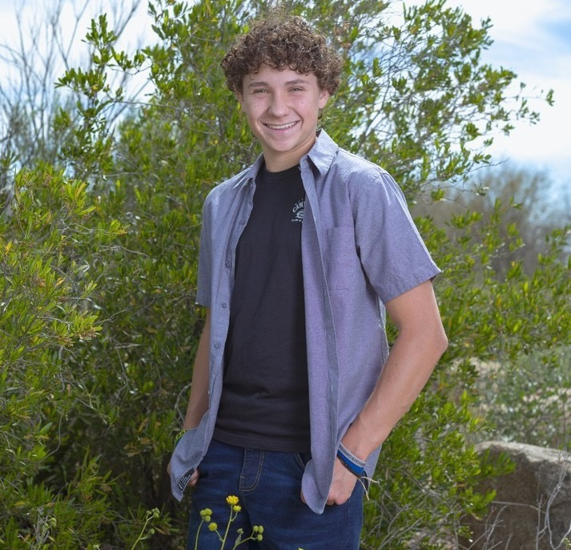

A Little About Me
My Name is Nathan Jacobson. I was born in Albuquerque, New Mexico and am currently 19 years old. I have lived all over the world and experienced many different environments and cultures. My family has moved from New Mexico, to Arizona, to China, to New York and we now live in Arizona again and have lived here for the past 8 years. I am a current freshman at Mesa Community College and hope to graduate in the spring of 2024 with an associates in arts and an associates in science. I compete for Mesa Community College in Pole Vault, a member of Phi Theta Kappa, and a presidential honors recipient.
I created this website as a way to keep track of the restorations that are made to certain antique vehicles that me and my family own. I try to improve upon my vehicles as best as possible, but am always open to other opinions and considerations. At the bottom of every page is a link to a Google Forms. I would really appreciate it if you could fill it out to better help me find future restoration ideas.
About the Website
Below are the pages of the website and their breif descriptions.
- My Cars - Restoration progress of my 1966 Chevy Nova and 2015 Scion FRS
- My Family's Cars - Restoration progress of my grandpa's 1939 Plymouth Coupe, 1969 Volkswagon Beetle, and 1955 Chevy Bel Air
- Antique Motorcycles - Restoration progress of my dad's 1930 Henderson, 1949 Harley-Davidson, and 1913 Thor
Google Forms
This is a link to the restoration recommendation Google Forms. I would really appreciate it if you could fill it out. Any feedback is welcome. I take all recommendations into consideration. Thank you!
Nova Restored
1966 Copper Anvil Ranch Avenue
Mesa, AZ
602-377-6682